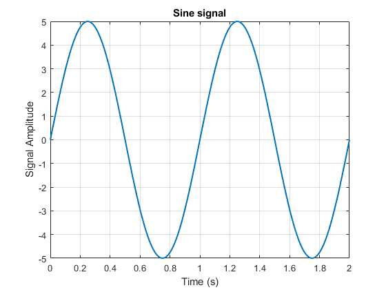
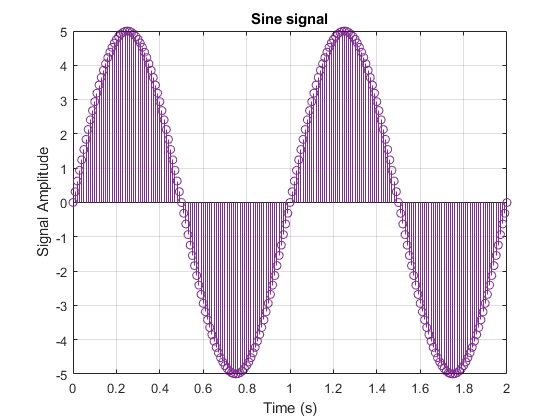
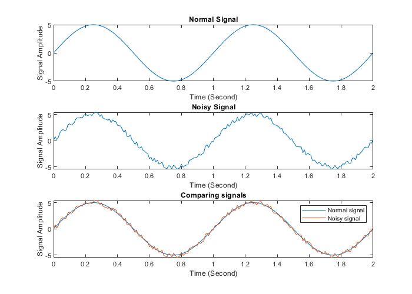
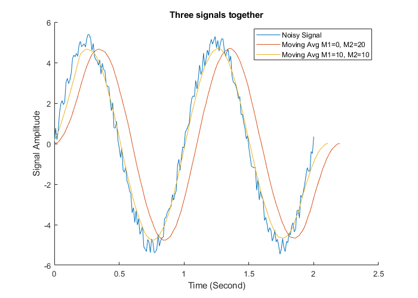
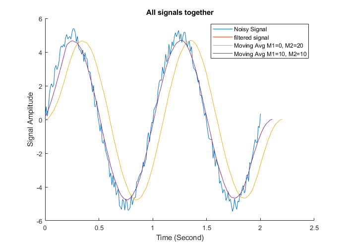
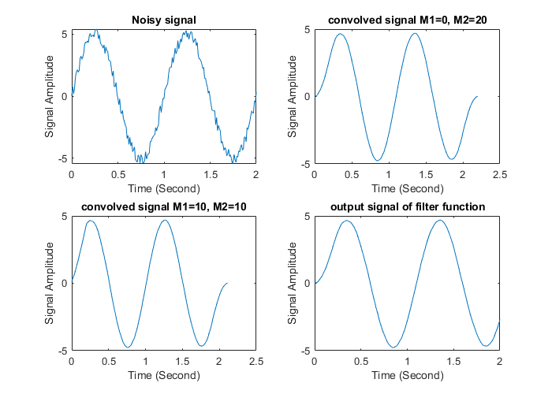
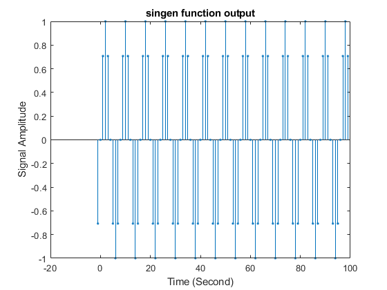

Contents
close all;
clear;
clc;
part 1
part 1.1
t = 0:0.01:2; % Define time axis A = 5; % Amplitude f = 1; % Frequency y = A*sin(2*pi*f*t); % Sine function % Plotting signals figure('Name', 'Sine signal (Plot)'); plot(t, y, 'LineWidth', 1.5); xlabel('Time (s)'); ylabel('Signal Amplitude'); title('Sine signal'); grid on; figure('Name', 'Sine signal (Stem)'); stem(t, y,'color', '#7E2F8E', 'LineWidth', 0.5); xlabel('Time (s)'); ylabel('Signal Amplitude'); title('Sine signal'); grid on; 
part 2
part 1.2
r = rand(1, length(y)) - 0.5; % Noise noised_signal = y + r; % Add noise to sine, y defined in section 1.1 % Plotting signals figure('Name', 'Normal Sine signal VS Noisy Sine Signal', 'Position', [300 200 700 500]); subplot(3,1,1); % Plotting normal signal without noise plot(t,y) title('Normal Signal');xlabel('Time (Second)');ylabel('Signal Amplitude'); subplot(3,1,2); % Plotting noisy signal plot(t,noised_signal) title('Noisy Signal');xlabel('Time (Second)');ylabel('Signal Amplitude'); %hold on; subplot(3,1,3); % Plotting both signal together for comparing them plot(t,y, t, noised_signal) hold on; title('Comparing signals');xlabel('Time (Second)');ylabel('Signal Amplitude'); legend('Normal signal', 'Noisy signal'); hold off;
part 3
part 1.3:
M1 = 0; M2 = 20; len = M2 + M1 + 1; % Window length window = ones(1, len) / len; % Moving average window y2 = conv(noised_signal, window); % Noised signal defined in section 1.2, Line 30 t2 = 0:0.01:(0.01 * (length(y2) - 1)); % Plotting section 1.3.1 figure('Name', 'Moving Avg signals', 'Position', [300 200 700 500]); hold on; plot(t,noised_signal); % Noise signal plot(t2, y2); % Moving Avg M1=0, M2=20 % part 1.3.2: M1 = 10; M2 = 10; len = M2 + M1 + 1; % Window length window = ones(1, len) / len; % Moving average window y3 = conv(noised_signal(M1:end), window); t3 = 0:0.01:(0.01 * (length(y3) - 1)); plot(t3, y3); % Moving Avg M1=0, M2=20 hold off; title('Three signals together'); xlabel('Time (Second)'); ylabel('Signal Amplitude'); legend("Noisy Signal", "Moving Avg M1=0, M2=20", "Moving Avg M1=10, M2=10");
part 4
part 1.4.1
M1 = 0; M2 = 20; len = M2 + M1 + 1; % Window length b = ones(1,len)/len; a = 1; y4_1 = filter(b, a, noised_signal); t4_1 = 0:0.01:(0.01 * (length(y4_1) - 1)); % Plotting section 1.4 figure('Name', 'Moving Avg signals by using filter function', 'Position', [300 200 700 500]); hold on; plot(t,noised_signal); % Noise signal plot(t4_1, y4_1); % filtered signal plot(t2,y2); % Plotting convolved signal M1=0, M2=20 plot(t3,y3); % Plotting convolved signal M1=10, M2=10 title('All signals together'); xlabel('Time (Second)'); ylabel('Signal Amplitude'); legend("Noisy Signal", "filtered signal", "Moving Avg M1=0, M2=20", "Moving Avg M1=10, M2=10"); hold off; % Plotting section 1.3 figure('Name', 'plotting in seperated subplots', 'Position', [300 200 700 500]); subplot(2,2,1); % Plotting noisy signal plot(t,noised_signal) title('Noisy signal');xlabel('Time (Second)');ylabel('Signal Amplitude'); subplot(2,2,2); % Plotting convolved signal M1=0, M2=20 plot(t2,y2) title('convolved signal M1=0, M2=20');xlabel('Time (Second)');ylabel('Signal Amplitude'); subplot(2,2,3); % Plotting convolved signal M1=10, M2=10 plot(t3,y3) title('convolved signal M1=10, M2=10');xlabel('Time (Second)');ylabel('Signal Amplitude'); subplot(2,2,4); % filtered signal plot(t4_1,y4_1) title('output signal of filter function');xlabel('Time (Second)');ylabel('Signal Amplitude'); 
part 5
part 1.5
w0 = pi/4; n = 101; [y5,t5] = singen(w0,n); %singen function is defined in singen.m figure('Name', 'singen'); stem(t5,y5, '.') title('singen function output');xlabel('Time (Second)');ylabel('Signal Amplitude');